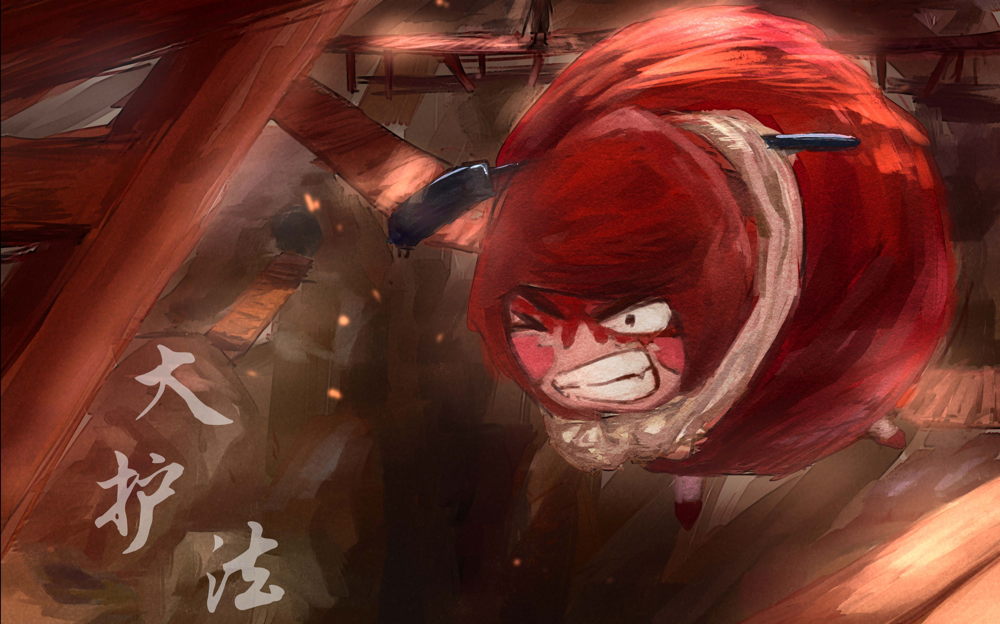

大护法故事简介
奕卫国大护法为了寻找失踪的太子，追到花生镇，这里半空中悬浮着一颗巨大的黑色花生，因此而得名。镇子上住着外形酷似花生的居民也被分为群众和执法者，一起都处于强权统治之下，一位名为吉安的人类在这里只手遮天，把花生人变得麻木且愚昧，互相出卖。大护法在寻找太子的过程中发现了一些秘密——当这些花生人长出黑色蘑菇的时候就会被执法者枪决，而且统治者吉安有一个巨大的阴谋。这些秘密让大护法成为被追杀的目标，好不容易被找出来的太子也身陷险境。
主要人物介绍
| 吴国的大护法，以呆萌护体，内心却有着极为暴力的小宇宙，有人也会叫他红色的矮冬瓜。他在孤独中独来独往，陪伴他的是一只不是鸟的鸟。很多时候像传说一般的存在。最大软肋是那个让人头痛的吴太子。关于大护法的身份，事实上这个问题也同样困惑着大护法本人，除了一边肩负与生俱来的职责，另一边，他也在不停的自问。 | |
| 让人头痛的吴国太子，一点都不喜欢自己的身份，他是个权力厌恶者，准确讲，也可以说是一个好色的享乐主义者、全片的吐槽担当。他有着一个画宫女裸体的怪癖。最大理想是画遍西宫的所有宫女。终于有一天，吴国的皇帝再也无法忍受这个自己寄予厚望的长子，一纸禁令让太子再也无法沉浸在自己的爱癖中。这也导致了太子离宫出走，去最求自由自在的生活。虽然怎么看都不靠谱，并且对权力没有半丝热爱。而他身上的正直与善良一直是他的父亲喜欢他的原因。 | |
| 自由意志觉醒的花生人，是一个与众不同的花生人，突破局限的冒险者。他曾以为外面的世界都是地狱，也和其他花生人一样恐惧与害怕那些关于外面世界的说法，但他害怕、好奇，他不喜欢这个死气沉沉的世界，总是爬到阻隔他们的城墙上面，看着外面世界的方向，他有很多迷惑，这些好奇心逐渐将他与花生人们梳理开来。最大困惑是他们是谁，他们将以怎样的方式死去。他的这些与众不同的想法和行为终于招来杀身之祸。 | |
| 没有人见过他的脸，据说见过他的人都已经死了。除了彩。通过彩的介绍，他来到了花生镇。欧阳吉安也应允了他们一大笔钱，这一点，欧阳吉安是有些迷惑的，因为他想不出这个怪物需要这些钱来干什么。在花生人眼里，这个人像魔鬼一般的存在着，他时时背负着几杆黑色的枪支，随时都有可能拔出其中的一杆来，打爆他们的脑袋。不问缘由的，只是他想。 |